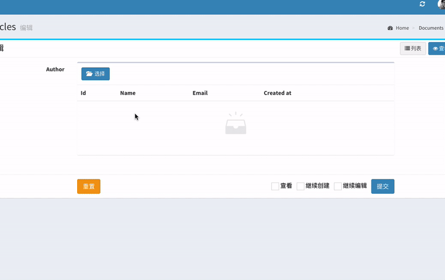
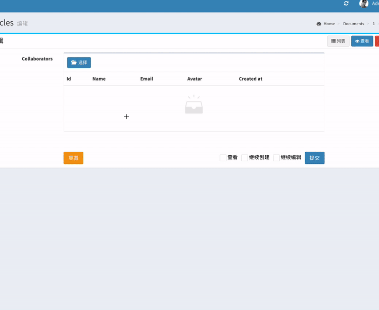
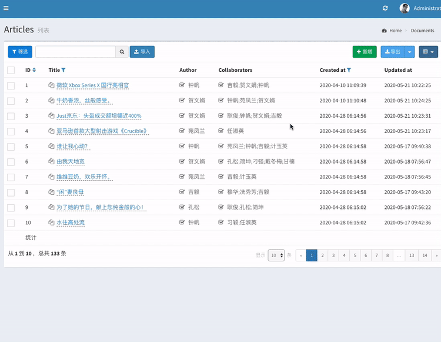

模型表单支持一对一、一对多、多对多等多种模型关联的数据处理
users表和profiles表通过profiles.user_id字段一对一关联
users
id - integer
name - string
email - string
profiles
id - integer
user_id - integer
age - integer
gender - string对应的数据模型为:
class User extends Model
{
public function profile()
{
return $this->hasOne(Profile::class);
}
}
class Profile extends Model
{
public function user()
{
return $this->belongsTo(User::class);
}
}
下面的代码可以在User模型的表单中直接编辑关联模型profiles中的age、gender字段
$form = new Form(new User);
$form->text('name');
$form->text('email');
// 关联模型Profile的字段
$form->text('profile.age');
$form->text('profile.gender');
同样反向关系也可以直接在Profile模型的表单中编辑归属模型User中的数据
$form = new Form(new Profile);
$form->text('age');
$form->text('gender');
// 关联模型Profile的字段
$form->text('user.name');
$form->text('user.email');
MorphOne关联的使用方法和上述HasOne、BelongsTo关联一致。
painters和paintings有两张通过painter_id建立一对多关联：
painters
id - integer
username - string
bio - text
paintings
id - integer
painter_id - integer
title - string
body - text
completed_at - timestamp表的模型为：
class Painter extends Model
{
public function paintings()
{
return $this->hasMany(Painting::class, 'painter_id');
}
}
class Painting extends Model
{
public function painter()
{
return $this->belongsTo(Painter::class, 'painter_id');
}
}通过下面的表单构建代码来实现主表和字段字段的编辑：
// 主表字段
$form->text('username')->rules('required');
$form->textarea('bio')->rules('required');
// 子表字段
$form->hasMany('paintings', function (Form\NestedForm $form) {
$form->text('title');
$form->image('body');
$form->datetime('completed_at');
});
// 可以使用第二个参数设置label
$form->hasMany('paintings', '画作', function (Form\NestedForm $form) {
});注意：目前HasMany表单对复杂的表单组件(富文本等)支持不够友好。
多态一对多关联和HasMany关联的使用方法是一至的
posts和comments有两张通过painter_id建立多态一对多关联：
posts
id - integer
content - text
comments
id - integer
body - integer
commentable_id - integer
commentable_type - string表的模型为：
class Post extends Model
{
public function comments()
{
return $this->morphMany(Comment::class, 'commentable');
}
}
class Comment extends Model
{
public function commentable()
{
return $this->morphTo();
}
}通过下面的表单构建代码来实现主表和字段字段的编辑：
// 主表字段
$form->text('username')->rules('required');
$form->textarea('bio')->rules('required');
// 子表字段
$form->morphMany('paintings', function (Form\NestedForm $form) {
$form->text('title');
$form->image('body');
$form->datetime('completed_at');
});
// 可以使用第二个参数设置label
$form->morphMany('paintings', '画作', function (Form\NestedForm $form) {
});实际上morphMany方法是hasMany方法的别名，因关联名称的不同而做的区分，两者使用方法一致。
users表和roles表通过中间表role_user多对多关联，一个用户可以有多个角色，一个角色也可以属于多个用户
users
id - integer
name - string
roles
id - integer
name - integer
role_user
user_id - integer
role_id - integer对应的数据模型为:
class User extends Model
{
public function roles()
{
return $this->belongsToMany(Role::class);
}
}
class Role extends Model
{
public function user()
{
return $this->belongsToMany(User::class);
}
}
那么有multipleSelect和checkbox两个组件支持多对多关联关系的选择
比如在用户的表单中选择角色：
$form = new Form(new User);
$form->multipleSelect('roles', '角色')->options(Role::all()->pluck('name', 'id'));或者在角色的表单中选择用户：
$form = new Form(new Role);
$form->multipleSelect('users', '用户')->options(User::all()->pluck('name', 'id'));checkbox也是一样的用法：
$form = new Form(new User);
$form->checkbox('roles', '角色')->options(Role::all()->pluck('name', 'id'));以下面的文章表和用户表为例，每一篇文章都归属于一个用户（作者）
articles
id - integer
author_id - integer
title - string
body - text
users
id - integer
name - string
email - string
avatar - string模型：
class Article extends Model
{
public function author()
{
return $this->belongsTo(User::class);
}
}
class User extends Model
{
}如果要在文章的表单中选择作者，可以使用select组件
$form->select('author_id')->options(User::all()->pluck('name', 'id'));select组件有两个比较明显的问题，第一、如果用户数量太多，select的选项会过长，第二，没办法在select的选项中展示更多的用户信息，比如email、avatar这两个字段。
下面的BelongsTo和BelongsToMany两个方法很好的解决了这个问题，使用弹出列表的形式来选择归属对象。
同样使用上面例子中的表结构和模型，使用方法如下
先定义列表选择类：
<?php
namespace App\Admin\Selectable;
use App\Models\User;
use Encore\Admin\Table\Filter;
use Encore\Admin\Table\Selectable;
class Users extends Selectable
{
public $model = User::class;
public function make()
{
$this->column('id');
$this->column('name');
$this->column('email');
$this->column('avatar', '头像')->image();
$this->column('created_at');
$this->filter(function (Filter $filter) {
$filter->like('name');
});
}
}列表选择类中，$model属性用来指定列表的模型，列表默认数据为10条，可以使用属性 protected $perPage = 5;来设置每页数量。
make方法用来构建列表，使用方法参考 model-table 文档
下面是在表单中使用它：
use App\Admin\Selectable\Users;
$form->belongsTo('author_id', Users::class, '作者');使用效果如下：

用belongsToMany方法来替代multipleSelect，进行多对多关系的选择
以下面的文章表和用户表为例，每一遍文章都归属于多个用户（协作者）
articles
id - integer
title - string
body - text
users
id - integer
name - string
email - string
avatar - string
article_user
user_id - integer
article_id - integer 模型：
class Article extends Model
{
public function collaborators()
{
return $this->belongsToMany(User::class);
}
}
class User extends Model
{
}下面是在表单中使用它：
// 使用上例中定义的列表选择类
use App\Admin\Selectable\Users;
$form->belongsToMany('collaborators', Users::class, __('协作者'));使用效果如下：

只要在表单中使用了归属选择器，也同时可以在列表页中使用，实现行内编辑
// 使用上例中定义的列表选择类
use App\Admin\Selectable\Users;
$table->column('author_id', 'Author')
->belongsTo(Users::class);
$table->column('collaborators', 'Collaborators')
->belongsToMany(Users::class);注意，在列表中使用时，必须在列表选择类App\Admin\Selectable\Users中增加一个display方法，以定义这两列在列表中的显示：
class Users extends Selectable
{
...
public static function display()
{
return function ($value) {
// 如果`$value`是数组，表示在`collaborators`列中使用，显示用分号`;`分隔的用户`name`字段
if (is_array($value)) {
return implode(';', array_column($value, 'name'));
}
// 否则为`author_id`列使用，直接显示用户的`name`字段
return optional($this->author)->name;
};
}
}
使用效果如下：

以下几种关联不支持表单编辑
HasOneThrough、HasManyThrough、MorphTo、MorphToMany